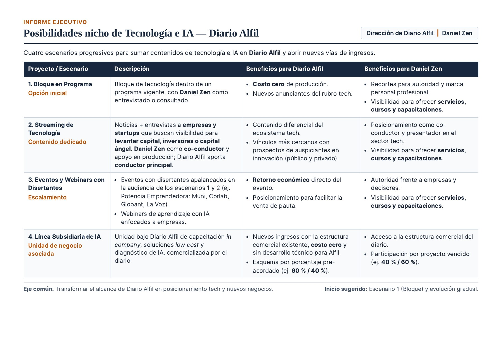

Documento 1 · Informe ejecutivo
Posibilidades de nicho en Tecnología e IA
Cuatro escenarios progresivos: bloque en programa, streaming de tecnología, eventos y webinars, y línea subsidiaria de IA. Inicio sugerido con el Escenario 1.
Abrir PDF
1 página · A4 horizontal